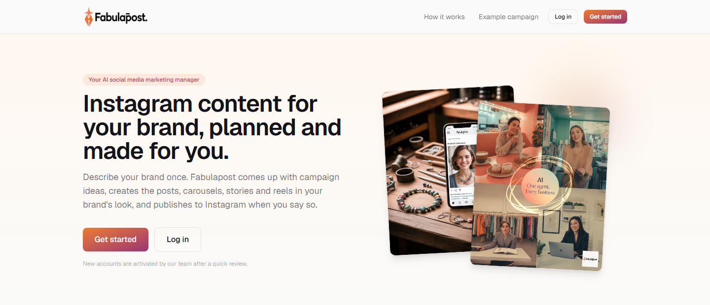
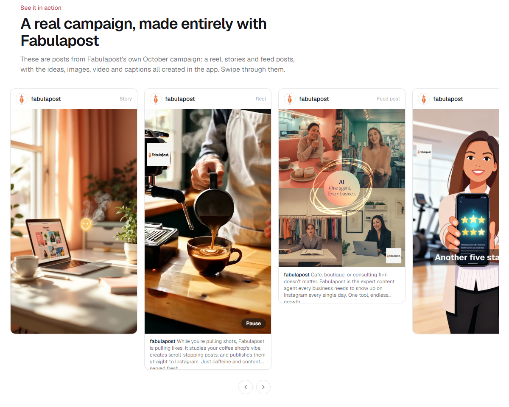

Featured · AI agent built from scratch
Fabulapost — your AI social media marketing manager
An agentic Instagram content marketer I built end to end. Describe your brand once (or let it read your website) and Fabulapost comes up with campaign ideas, creates the posts, carousels, stories and reels in your brand’s look and tone, and publishes to Instagram when you say so.
- Describe your brand, or let it read your website
- Ideate: set a goal and get campaign ideas with captions and hashtags
- Approve: review and edit; content is only created after approval
- Publish to Instagram in one click
- Visuals and video in your brand’s colours, fonts, logo and tone
- Sized for feed, carousel, story and reel formats
- Brand ambassador can appear in images
- Manage multiple brands from one account
fabulapost.com

fabulapost.com
